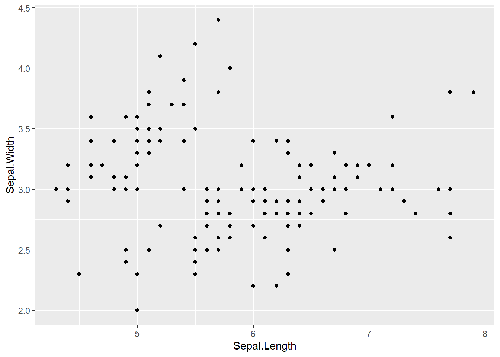
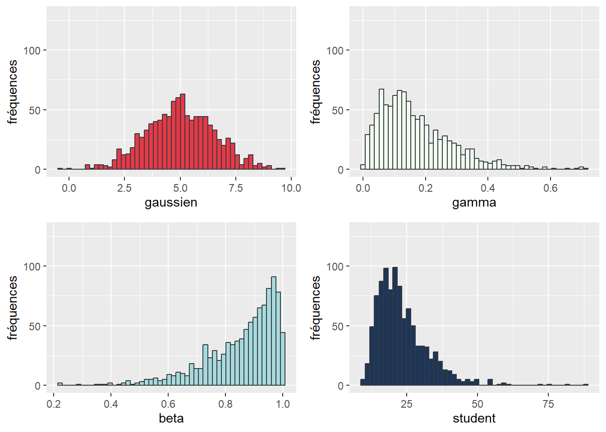
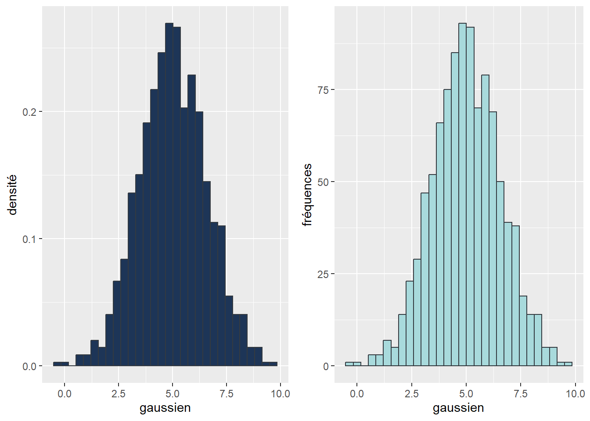
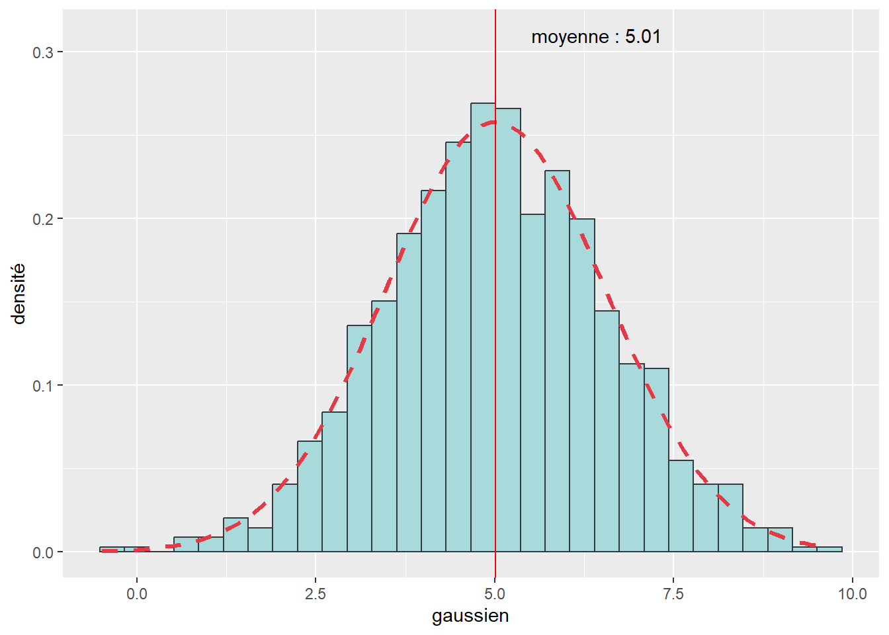
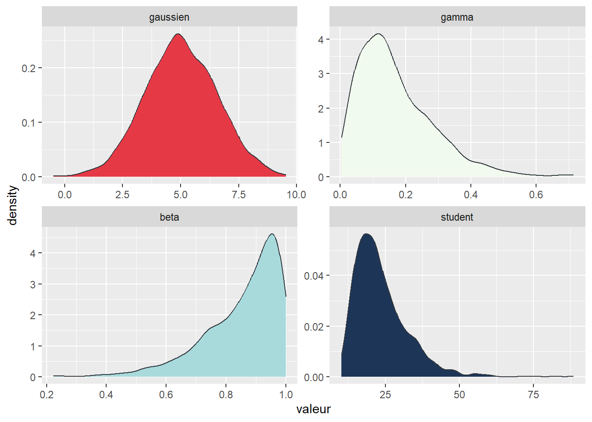

[1] "Sepal.Length" "Sepal.Width" "Petal.Length" "Petal.Width" "Species" ggplot()
Dans ce chapitre, nous découvrons les incroyables capacités graphiques de R. Pour ce faire, nous couvrons en profondeur les fonctionnalités du package ggplot2 du tidyverse. Selon nous, il s’agit de loin du meilleur package pour réaliser des graphiques.
Liste des packages utilisés dans ce chapitre
ggplot2, le seul, l’unique!ggpubr pour combiner des graphiques.ggthemes pour utiliser des thèmes complémentaires pour les graphiques.RColorBrewer pour accéder à des palettes de couleurs.chorddiag pour construire des graphiques d’accord.fmsb pour construire des graphiques en radar.treemap pour construire une carte proportionnelle.wordcloud2 et textrank pour construire un nuage de mots.classInt pour calculer les intervalles des classes.ggspatial pour afficher une échelle avec ggplot2.tmap pour la cartographie.dplyr et reshape2 pour manipuler des données.pdftools pour extraire les textes des fichiers pdf.udpipe pour obtenir des dictionnaires linguistiques.sf pour manipuler des simple feature collections.Qu’est-ce que la visualisation de données?
La représentation visuelle de données consiste à transposer des informations en une représentation graphique facilitant la lecture de ces dernières. Il s’agit autant d’un ensemble de méthodes, d’un art que d’un moyen de communication. Voici deux exemples marquants avant de détailler ce propos.
La première illustration permet de visualiser le volume de plastique que représente la consommation d’eau en bouteille : 480 milliards de bouteilles vendues en 10 ans! Ce chiffre astronomique est inimaginable. En revanche, une montagne de plastique de 2400 mètres surplombant Manhattan marque davantage les esprits.
Le second graphique représente quatre informations pour 234 villes à travers le monde :
la croissance démographique (axe des abscisses),
la vulnérabilité au changement climatique (axe des ordonnées),
la taille des villes (taille des cercles),
le continent sur lequel est localisée chaque ville (couleur des cercles).
Le graphique est à la fois très accrocheur et esthétique. En un coup d’œil, nous constatons que les villes avec une forte croissance démographique sont aussi les plus vénérables (lecture des deux axes) et qu’elles sont surtout localisées en Afrique et secondairement en Asie (en rouge et orange), quelle que soit leur taille (taille du cercle). À l’inverse, les villes européennes et américaines (en bleu) sont beaucoup moins vulnérables aux changements climatiques et une croissance démographique plus faible, qu’elles soient de petites, de moyennes ou de grandes villes.
Souvent négligée, la visualisation de données est perçue comme une tâche triviale : il s’agit simplement de représenter une donnée sous forme d’un graphique, car c’est l’option la plus pratique ou qui prend le moins d’espace. Pourtant, les avantages de la visualisation des données sont nombreux. Par exemple, la visualisation de données intègre aujourd’hui des supports dynamiques comme des animations, des figures interactives ou des applications web. R offre d’ailleurs des possibilités très intéressantes en la matière avec des packages comme shiny, plotly ou leaflet. Toutefois, nous ne couvrons pas ici ces méthodes plus récentes en visualisation des données qui devraient faire l’objet d’un autre livre.
Les principaux avantages de la visualisation des données :
Analyse exploratoire des données (exploratory data analysis - EDA en anglais). Visualiser des données est crucial pour détecter des problèmes en tout genre (données manquantes, valeurs extrêmes ou aberrantes, non-respect de conditions d’application de tests statistiques, etc.), mais aussi pour repérer de nouvelles associations entre les variables.
Communication de vos résultats. La raison d’être d’un graphique est de livrer un message clair relatif à un résultat obtenu suite à une analyse rigoureuse de vos données. Si votre graphique n’apporte aucune information claire, il vaut mieux ne pas le présenter, ni le diffuser. Les représentations ne sont pas neutres. Les couleurs et les formes ont des significations particulières en fonction de la culture et du contexte. Posez-vous donc toujours la question : à quel public est destiné le message? Évitez de surcharger vos visualisations de données, sinon l’essence du message sera perdue.
Aide à la décision. Une illustration (graphique ou carte) peut être un outil facilitant la prise de décisions.
Le package ggplot2 fait partie du tidyverse et dispose d’une logique de fonctionnement particulière. Cette dernière se nomme The Grammar of Graphics (les deux G sont d’ailleurs à l’origine du nom ggplot2), proposée par Hadley Wickham (le créateur du tidyverse!) dans un article intitulé A layered grammar of graphics (Wickham 2010). Nous proposons de synthétiser ici les concepts et principes centraux qui sous-tendent la production de graphiques avec ggplot2.
Hadley Wickham propose une grammaire pour unifier la création de graphiques. L’idée est donc de dépasser les simples dénominations comme un nuage de points, un diagramme en boîte, un graphique en ligne, etc., pour comprendre ce qui relie tous ces graphiques. Ces éléments communs et centraux sont les géométries, les échelles et systèmes de coordonnées, et les annotations (figure 3.1) :
Les géométries sont les formes utilisées pour représenter les données. Il peut s’agir de points, de lignes, de cercles, de rectangles, d’arcs de cercle, etc.
Les échelles et systèmes de coordonnées permettent de contrôler la localisation des éléments dans un graphique en convertissant les données depuis leur échelle originale (dollars, kilomètres, pourcentages, etc.) vers l’échelle du graphique (pixels).
Les annotations recoupent l’ensemble des informations complémentaires ajoutées au graphique comme son titre et sous-titre, la source des données, la mention sur les droits d’auteurs, etc.
En plus de ces trois éléments, il est bien sûr nécessaire de disposer de données. Ces dernières sont assignées à des dimensions du graphique pour être représentées (notamment les axes X et Y et la couleur). Cette étape est appelée aesthetics mapping dans ggplot2.
Lorsque nous combinons des données, leur assignation a des dimensions, un type de géométries, des échelles et un système de coordonnées, nous obtenons un calque (layer en anglais). Un graphique peut comprendre plusieurs calques comme nous le verrons dans les prochaines sections.
Prenons un premier exemple très simple et construisons un nuage de points à partir du jeu de données iris fourni de base dans R. Nous représentons la relation qui existe entre la longueur et la largeur des sépales de ces fleurs. Pour commencer, nous devons charger le package ggplot2 et instancier un graphique avec la fonction ggplot.
[1] "Sepal.Length" "Sepal.Width" "Petal.Length" "Petal.Width" "Species" ggplot()
Pour le moment, le graphique est vide (figure 3.2). La seconde étape consiste à lui ajouter des données (au travers du paramètre data) et à définir les dimensions à associer aux données (avec le paramètre mapping et la fonction aes()). Dans notre cas, nous voulons utiliser les coordonnées X pour représenter la largeur des sépales, et les coordonnées Y pour représenter la longueur des sépales. Enfin, nous souhaitons représenter les observations par des points, nous utiliserons donc la géométrie geom_point.
ggplot(mapping = aes(x = Sepal.Length, y = Sepal.Width), data = iris) +
geom_point()
Ce graphique ne comprend qu’un seul calque avec une géométrie de type point (figure 3.3). Chaque calque est ajouté avec l’opérateur + qui permet de superposer des calques, le dernier apparaissant au-dessus des autres. Les arguments mapping et data sont définis ici dans la fonction ggplot et sont donc appliqués à tous les calques qui composent le graphique. Il est aussi possible de définir mapping et data au sein des fonctions des géométries :
ggplot() +
geom_point(mapping = aes(x = Sepal.Length, y = Sepal.Width), data = iris)
La troisième étape consiste à ajouter au graphique des annotations. Pour notre cas, il faudrait ajouter un titre, un sous-titre et des intitulés plus clairs pour les axes X et Y, ce qu’il est possible de faire avec la fonction labs (figure 3.5).
ggplot() +
geom_point(mapping = aes(x = Sepal.Length, y = Sepal.Width), data = iris) +
labs(title = "Morphologie des sépales des iris", subtitle = "n = 150",
x = "Longueur des sépales",
y = "Largeur des sépales")Le package ggplot2 permet d’utiliser un très grand nombre de géométries différentes. Dans le tableau 3.1, nous avons reporté les principales géométries disponibles afin que vous puissiez vous faire une idée du « bestiaire » existant. Il ne s’agit que d’un extrait des principales fonctions. Sachez qu’il existe aussi des packages proposant des géométries supplémentaires pour compléter ggplot2.
| Géométrie | Fonction |
|---|---|
| Point | geom_point |
| Ligne | geom_line |
| Chemin | geom_path |
| Boîte à moustaches | geom_boxplot |
| Diagramme violon | geom_violin |
| Histogramme | geom_histogram |
| Barre | geom_bar |
| Densité | geom_density |
| Texte | geom_label |
| Barre d’erreur | geom_errorbar |
| Surface | geom_ribbon |
Dans le premier exemple, nous avons montré comment ajouter le titre, le sous-titre et les titres des axes sur un graphique. Il est aussi possible d’ajouter du texte sous le graphique (généralement la source des données avec l’argument caption) et des annotations textuelles (annotate). Pour ces dernières, il convient de spécifier leur localisation (coordonnées x et y) et le texte à intégrer (label); elles sont ensuite ajoutées au graphique avec l’opérateur +. Ajoutons deux annotations pour identifier deux fleurs spécifiques.
ggplot() +
geom_point(mapping = aes(x = Sepal.Length, y = Sepal.Width), data = iris) +
labs(title = "Morphologie des sépales des iris", subtitle = "n = 150",
x = "Longueur des sépales",
y = "Largeur des sépales",
caption = "Source : jeu de données iris") +
annotate("text", x = 6.7, y = 2.5, # position de la note
label = "une virginica", # texte de la note
hjust = "left", vjust = "top", # ajustement
size = 3, fontface = "italic") +
annotate("text", x = 5.7, y = 4.4, # position de la note
label = "une setosa", # texte de la note
hjust = "left", vjust = "top", # ajustement
size = 3, fontface = "italic") Comme vous pouvez le constater, de nombreux paramètres permettent de contrôler le style des annotations. Pour avoir la liste des arguments disponibles, n’hésitez pas à afficher l’aide de la fonction : help(annotate).
En plus des annotations de type texte, il est possible d’ajouter des annotations de type géométrique. Nous pourrions ainsi délimiter une boîte encadrant les fleurs de l’espère setosa.
setosas <- subset(iris, iris$Species == "setosa")
sepal.length_extent <- c(min(setosas$Sepal.Length), max(setosas$Sepal.Length))
sepal.width_extent <- c(min(setosas$Sepal.Width), max(setosas$Sepal.Width))
ggplot() +
geom_point(mapping = aes(x = Sepal.Length, y = Sepal.Width), data = iris) +
labs(title = "Morphologie des sépales des iris", subtitle = "n = 150",
x = "Longueur des sépales",
y = "Largeur des sépales",
caption = "Source : jeu de données iris") +
annotate("text", x = 6.7, y = 2.5, # position de la note
label = "une virginica", # texte de la note
hjust = "left", vjust = "top", # ajustement
size = 3, fontface = "italic") +
annotate("text", x = 5.7, y = 4.4, # position de la note
label = "une setosa", # texte de la note
hjust = "left", vjust = "top", # ajustement
size = 3, fontface = "italic") +
annotate("rect",
ymin = sepal.width_extent[[1]],
ymax = sepal.width_extent[[2]],
xmin = sepal.length_extent[[1]],
xmax = sepal.length_extent[[2]],
fill = rgb(0.7,0.7,0.7,.5), # remplissage transparent à 50%
color = "black") # contour de couleur verteComme le dernier calque ajouté au graphique est le rectangle, vous noterez qu’il recouvre tous les calques existant, y compris les précédentes annotations. Pour corriger cela, il suffit de changer l’ordre des calques.
ggplot() +
annotate("rect",
ymin = sepal.width_extent[[1]],
ymax = sepal.width_extent[[2]],
xmin = sepal.length_extent[[1]],
xmax = sepal.length_extent[[2]],
fill = rgb(0.7,0.7,0.7,.5), # remplissage transparent à 50%
color = "green") + # contour de couleur verte
geom_point(mapping = aes(x = Sepal.Length, y = Sepal.Width), data = iris) +
labs(title = "Morphologie des sépales des iris", subtitle = "n = 150",
x = "Longueur des sépales",
y = "Largeur des sépales",
caption = "Source : jeu de données iris") +
annotate("text", x = 6.7, y = 2.5, # position de la note
label = "une virginica", # texte de la note
hjust = "left", vjust = "top", # ajustement
size = 3, fontface = "italic") +
annotate("text", x = 5.7, y = 4.4, # position de la note
label = "une setosa", # texte de la note
hjust = "left", vjust = "top", # ajustement
size = 3, fontface = "italic")De nombreux autres éléments peuvent être modifiés dans un graphique comme les paramètres des polices, l’arrière-plan, la grille de repères, etc. Il peut être fastidieux de paramétrer tous ces éléments. Une option intéressante est d’utiliser des thèmes déjà préconstruits. Le package ggplot2 propose une dizaine de thèmes : constatons leur impact sur le graphique précédent.
theme_classic) (figure 3.9)ggplot() +
geom_point(mapping = aes(x = Sepal.Length, y = Sepal.Width), data = iris) +
labs(title = "Morphologie des sépales des iris", subtitle = "n = 150",
x = "Longueur des sépales",
y = "Largeur des sépales",
caption = "Source : jeu de données iris") +
theme_classic()theme_gray) (figure 3.10)ggplot() +
geom_point(mapping = aes(x = Sepal.Length, y = Sepal.Width), data = iris) +
labs(title = "Morphologie des sépales des iris", subtitle = "n = 150",
x = "Longueur des sépales",
y = "Largeur des sépales",
caption = "Source : jeu de données iris") +
theme_gray()theme_bw) (figure 3.11)ggplot() +
geom_point(mapping = aes(x = Sepal.Length, y = Sepal.Width), data = iris) +
labs(title = "Morphologie des sépales des iris", subtitle = "n = 150",
x = "Longueur des sépales",
y = "Largeur des sépales",
caption = "Source : jeu de données iris") +
theme_bw()theme_minimal) (figure 3.12)ggplot() +
geom_point(mapping = aes(x = Sepal.Length, y = Sepal.Width), data = iris) +
labs(title = "Morphologie des sépales des iris", subtitle = "n = 150",
x = "Longueur des sépales",
y = "Largeur des sépales",
caption = "Source : jeu de données iris") +
theme_minimal()Il est aussi possible d’utiliser le package ggthemes qui apporte des thèmes complémentaires intéressants dont :
theme_tufte, à l’ancienne…) (figure 3.13)library(ggthemes)
ggplot() +
geom_point(mapping = aes(x = Sepal.Length, y = Sepal.Width), data = iris) +
labs(title = "Morphologie des sépales des iris", subtitle = "n = 150",
x = "Longueur des sépales",
y = "Largeur des sépales",
caption = "Source : jeu de données iris") +
theme_tufte()theme_economist, inspiré de la revue du même nom) (figure 3.14)ggplot() +
geom_point(mapping = aes(x = Sepal.Length, y = Sepal.Width), data = iris) +
labs(title = "Morphologie des sépales des iris", subtitle = "n = 150",
x = "Longueur des sépales",
y = "Largeur des sépales",
caption = "Source : jeu de données iris") +
theme_economist()theme_solarized, plus original) (figure 3.15)ggplot() +
geom_point(mapping = aes(x = Sepal.Length, y = Sepal.Width), data = iris) +
labs(title = "Morphologie des sépales des iris", subtitle = "n = 150",
x = "Longueur des sépales",
y = "Largeur des sépales",
caption = "Source : jeu de données iris") +
theme_solarized()Il en existe bien d’autres et vous pouvez composer vos propres thèmes. N’hésitez pas à explorer la documentation de ggplot2 et de ggthemes pour en apprendre plus!
Il est très fréquent de vouloir combiner plusieurs graphiques dans une même figure. Deux cas se distinguent :
Les données pour les différents graphiques proviennent du même DataFrame et peuvent être distinguées selon une variable catégorielle. L’objectif est alors de dupliquer le même graphique, mais pour des sous-groupes de données. Dans ce cas, nous recommandons d’utiliser la fonction facet_wrap de ggplot2.
Les graphiques sont complètement indépendants. Dans ce cas, nous recommandons d’utiliser la fonction ggarrange du package ggpubr.
ggplot2 et ses facettesNous pourrions souhaiter réaliser une figure composite avec le jeu de données iris et séparer notre nuage de points en trois graphiques distincts selon l’espèce des iris (figure 3.16). Pour cela, il faut au préalable convertir la variable espèce en facteur.
iris$Species_fac <- as.factor(iris$Species)
ggplot() +
geom_point(mapping = aes(x = Sepal.Length, y = Sepal.Width), data = iris) +
labs(title = "Morphologie des sépales des iris", subtitle = "n = 150",
x = "Longueur des sépales",
y = "Largeur des sépales",
caption = "Source : jeu de données iris") +
facet_wrap(vars(Species_fac), ncol = 2)Notez que le nom de la variable (ici Species_fac) doit être spécifié au sein d’une sous-fonction vars : vars(Species_fac). Nous aurions aussi pu réaliser le graphique sur une seule ligne en spécifiant ncol = 3 (figure 3.17).
ggplot() +
geom_point(mapping = aes(x = Sepal.Length, y = Sepal.Width), data = iris) +
labs(title = "Morphologie des sépales des iris", subtitle = "n = 150",
x = "Longueur des sépales",
y = "Largeur des sépales",
caption = "Source : jeu de données iris") +
facet_wrap(vars(Species_fac), ncol = 3)La solution avec les facettes est très pratique, mais également très limitée puisqu’elle ne permet pas de créer une figure avec des graphiques combinant plusieurs types de géométries. ggarrange du package ggpubr permet tout simplement de combiner des graphiques déjà existant. Créons deux nuages de points comparant plusieurs variables en fonction de l’espèce des iris, puis combinons-les (figure 3.18). Attribuons également aux points une couleur en fonction de l’espèce des fleurs, afin de mieux les distinguer en associant la variable Species au paramètre color.
library(ggpubr)
plot1 <- ggplot(data = iris) +
geom_point(aes(x = Sepal.Length, y = Sepal.Width, color = Species)) +
labs(subtitle = "Caractéristiques des sépales",
x = "Longueur",
y = "Largeur",
color = "Espèce")
plot2 <- ggplot(data = iris) +
geom_point(aes(x = Petal.Length, y = Petal.Width, color = Species)) +
labs(subtitle = "Caractéristiques des pétales",
x = "Longueur",
y = "Largeur",
color = "Espèce")
liste_plots <- list(plot1, plot2)
comp_plot <- ggarrange(plotlist = liste_plots, ncol = 2, nrow = 1,
common.legend = TRUE, legend = "bottom") #gérer la légende
annotate_figure(comp_plot,
top = text_grob("Morphologie des sépales et pétales des iris",
face = "bold", size = 12, just = "center"),
bottom = text_grob("Source : jeu de données iris",
face = "italic", size = 8, just = "left")
)Quatre étapes sont nécessaires :
ggarrange.L’argument common.legend permet d’indiquer à la fonction ggarrange de regrouper les légendes des deux graphiques. Dans notre cas, les deux graphiques ont les mêmes légendes, il est donc judicieux de les regrouper. L’argument legend contrôle la position de la légende et peut prendre les valeurs : top, bottom, left, right ou none (absence de légende). La fonction annotate_figure permet d’ajouter des éléments de texte au-dessus, au-dessous et sur les cotés de la figure composite.
Dans un graphique, la couleur peut être utilisée à la fois pour représenter une variable quantitative (dégradé de couleur ou mise en classes), ou une variable qualitative (couleur par catégorie). Dans ggplot2, il est possible d’attribuer une couleur au contour des géométries avec l’argument color et au remplissage avec l’argument fill. Il est possible de spécifier une couleur de trois façons dans R :
"chartreuse4". R dispose de 657 noms de couleurs prédéfinis. Pour tous les afficher, utilisez la fonction colors(), qui permet de les visualiser (figure 3.19).
En indiquant le code hexadécimal de la couleur. Il s’agit d’une suite de six lettres et de chiffres précédée par un dièse : "#99ff33".
En utilisant une notation RGB (rouge, vert, bleu, transparence). Cette notation doit contenir quatre nombres entre 0 et 1 (0 % et 100 %), indiquant respectivement la quantité de rouge, de vert, de bleu et la transparence. Ces quatre nombres sont donnés comme argument à la fonction rgb : rgb(0.6, 1, 0.2, 0).
Le choix des couleurs est un problème plus complexe que la manière de les spécifier. Il existe d’ailleurs tout un pan de la sémiologie graphique dédié à la question du choix et de l’association des couleurs. Une première ressource intéressante est ColorBrewer. Il s’agit d’une sélection de palettes de couleurs particulièrement efficaces et dont certaines sont même adaptées pour les personnes daltoniennes (figure 3.20). Il est possible d’accéder directement aux palettes dans R grâce au package RColorBrewer et la fonction brewer.pal :
library(RColorBrewer)
display.brewer.all()
Une autre ressource pertinente est le site web coolors.co qui propose de nombreuses palettes à portée de clic.
Construire des graphiques avec ggplot2
Puisque vous avez désormais une certaine connaissance des bases de la grammaire des graphiques implémentées par ggplot2, vous apprendrez dans les sous-sections suivantes à construire les principaux graphiques que vous utiliserez régulièrement ou que vous présenterez dans un article scientifique.
L’histogramme permet de décrire graphiquement la forme de la distribution d’une variable. Pour le réaliser, nous utilisons la fonction geom_histogram. Le paramètre le plus important est le nombre de barres (bins) qui composent l’histogramme. Plus ce nombre est grand, plus l’histogramme est précis et, à l’inverse, plus il est petit, plus l’histogramme est simplifié. En revanche, il faut éviter d’utiliser un nombre de barres trop élevé comparativement au nombre d’observations disponibles dans le jeu de données, sinon l’histogramme risque d’avoir plein de trous.
Générons quatre variables ayant respectivement une distribution gaussienne, Student, Gamma et bêta, puis réalisons un histogramme pour chacune de ces variables et combinons-les avec la fonction ggarrange (figure 3.21).
distribs <- data.frame(
gaussien = rnorm(1000, mean = 5, sd = 1.5),
gamma = rgamma(1000, shape = 2, rate = 12),
beta = rbeta(1000, shape1 = 5, shape2 = 1, ncp = 2),
student = rt(1000, ncp = 20, df = 5)
)
plot1 <- ggplot(data = distribs) +
geom_histogram(aes(x = gaussien), bins = 50, color = "#343a40", fill = "#e63946")+
labs(y = "fréquences")+ylim(c(0,130))
plot2 <- ggplot(data = distribs) +
geom_histogram(aes(x = gamma), bins = 50, color = "#343a40", fill = "#f1faee")+
labs(y = "fréquences")+ylim(c(0,130))
plot3 <- ggplot(data = distribs) +
geom_histogram(aes(x = beta), bins = 50, color = "#343a40", fill = "#a8dadc")+
labs(y = "fréquences")+ylim(c(0,130))
plot4 <- ggplot(data = distribs) +
geom_histogram(aes(x = student), bins = 50, color = "#343a40", fill = "#1d3557")+
labs(y = "fréquences")+ylim(c(0,130))
histogrammes <- list(plot1, plot2, plot3, plot4)
ggarrange(plotlist = histogrammes, ncol = 2, nrow = 2)
Notez que cette syntaxe est très lourde. Dans le cas présent, il serait plus judicieux d’utiliser la fonction facet_wrap. Pour cela, nous devons au préalable empiler nos données, ce qui signifie changer la forme du DataFrame actuel, qui comprend quatre colonnes (gaussien, Gamma, bêta et student) et 1000 observations, pour qu’il n’ait plus que deux colonnes (la valeur originale et le nom de l’ancienne colonne) et 4000 observations. La figure 3.22 décrit graphiquement ce processus qui peut être effectué avec la fonction melt du package reshape2.

library(reshape2)
# Faire fondre le jeu de données
melted_distribs <- melt(distribs, measure.vars = c("gaussien", "gamma",
"beta" , "student"))
# Renommer les colonnes du nouveau DataFrame
names(melted_distribs) <- c("distribution", "valeur")
# Convertir la variable catégorielle en facteur
melted_distribs$distribution <- as.factor(melted_distribs$distribution)
ggplot(data = melted_distribs)+
geom_histogram(aes(x = valeur, fill = distribution), bins = 50, color = "#343a40") +
ylim(c(0,130)) +
labs(x = "valeur",
y = "fréquences")+
scale_fill_manual(values = c("#e63946" , "#f1faee" , "#a8dadc" , "#1d3557"))+
facet_wrap(vars(distribution), ncol = 2, scales = "free")+
theme(legend.position = "none")Les histogrammes que nous venons de construire utilisent la fréquence des observations pour délimiter la hauteur des barres. Il est possible de changer ce comportement pour plutôt utiliser la densité. L’intérêt est notamment de se rapprocher encore de la définition d’une distribution puisqu’avec cette configuration, la somme totale de la surface de l’histogramme est égale à 1. La hauteur de chaque barre représente alors la probabilité d’obtenir l’étendue de valeurs représentées par cette barre. Prenons pour exemple la variable avec la distribution normale que nous venons de voir.
plot1 <- ggplot(data = distribs) +
geom_histogram(aes(x = gaussien, y = after_stat(density)),
bins = 30, color = "#343a40", fill = "#1d3557")+
labs(x = "gaussien", y = "densité")
plot2 <- ggplot(data = distribs) +
geom_histogram(aes(x = gaussien, y = ..count..),
bins = 30, color = "#343a40", fill = "#a8dadc")+
labs(x = "gaussien", y = "fréquences")
ggarrange(plotlist = list(plot1, plot2), ncol = 2)Warning: The dot-dot notation (`..count..`) was deprecated in ggplot2 3.4.0.
ℹ Please use `after_stat(count)` instead.
Le graphique de droite (fréquence) nous indique donc que plus de 60 observations ont une valeur d’environ 5 (entre 4,76 et 5,34, compte tenu de la largeur de la barre), ce qui se traduit par une probabilité de presque 30 % d’obtenir cette valeur en tirant une observation au hasard dans le jeu de données.
Les histogrammes sont souvent utilisés pour vérifier graphiquement si une distribution empirique s’approche d’une courbe normale. Pour cela, nous ajoutons sur l’histogramme de la variable empirique la forme qu’aurait une distribution normale parfaite en utilisant la moyenne et l’écart type de la distribution empirique. Pour créer cette figure dans ggplot2, il suffit d’utiliser la fonction stat_function pour créer un nouveau calque. Il est aussi possible d’ajouter une ligne verticale (geom_vline) pour indiquer la moyenne de la distribution.
moyenne <- mean(distribs$gaussien)
ecart_type <- sd(distribs$gaussien)
ggplot(data = distribs) +
geom_histogram(aes(x = gaussien, y = after_stat(density)),
bins = 30, color = "#343a40", fill = "#a8dadc") +
labs(x = "gaussien",
y = "densité")+
stat_function(fun = dnorm, args = list(mean = moyenne, sd = ecart_type),
color = "#e63946", linewidth = 1.2, linetype = "dashed") +
geom_vline(xintercept = moyenne, color = "red", linetype = 1)+
annotate("text", x = round(moyenne,2)+0.5, y = 0.31, hjust = 'left',
label = paste('moyenne : ', round(moyenne,2), sep=''))
Dans notre cas, nous savons que notre variable est normalement distribuée (car produite avec la fonction rnorm), et nous pouvons constater la grande proximité entre l’histogramme et la courbe normale.
Il peut être nécessaire d’attirer le regard sur certaines parties de l’histogramme, comme sur des valeurs extrêmes. Si nous reprenons notre distribution de Student, nous pouvons clairement distinguer un ensemble de valeurs fortes à droite de la distribution. Nous pourrions, dans notre cas, considérer que des valeurs au-delà de 50 constituent des cas extrêmes que nous souhaitons représenter dans une autre couleur. Pour cela, nous devons créer une variable catégorielle nous permettant de distinguer ces cas particuliers.
distribs$cas_extreme <- ifelse(distribs$student >=50, "extrême", "normale")
ggplot(data = distribs) +
geom_histogram(aes(x = student, y = ..count.., fill = cas_extreme),
bins = 30, color = "#343a40")+
scale_fill_manual("", values = c("#a8dadc" , "#e63946"))+
labs(title = "Distribution de Student", x = "valeur", y = "fréquence")L’histogramme est utilisé pour approximer graphiquement la distribution d’une variable. Sa principale limite est de représenter la variable de façon discontinue. Une option intéressante est d’utiliser une version lissée de l’histogramme, soit le graphique de densité. Cette opération de lissage est réalisée le plus souvent à partir de fonctions kernel. Reconstruisons notre figure avec les quatre distributions, mais en utilisant cette fois-ci des graphiques de densité.
ggplot(data = melted_distribs)+
geom_density(aes(x = valeur, fill = distribution), color = "#343a40") +
scale_fill_manual(values = c("#e63946" , "#f1faee" , "#a8dadc" , "#1d3557"))+
facet_wrap(vars(distribution), ncol = 2, scales = "free")+
theme(legend.position = "none")
Les graphiques de densité sont souvent utilisés pour comparer la distribution d’une variable pour plusieurs sous-groupes d’une population. Si nous reprenons le jeu de données iris, nous pouvons comparer les longueurs de sépales en fonction des espèces. Nous constatons ainsi que les setosas ont une nette tendance à avoir des sépales plus courts et qu’à l’inverse, les virginicas ont les sépales généralement les plus longs.
ggplot(data = iris)+
geom_density(aes(x = Sepal.Length, fill = Species),
color = "#343a40", alpha = 0.4)+
labs(x = "Longueur de sépales",
y = "",
fill = "Espèce")Un nuage de points est un outil très intéressant pour visualiser la relation existante entre deux variables. Prenons un exemple concret et analysons le volume de CO2 produit annuellement par habitant en comparaison avec le niveau d’urbanisation dans l’ensemble des pays à travers le monde. Nous avons extrait ces données sur le site web de la Banque mondiale, puis nous les avons structurés dans un fichier csv.
[1] "country_code" "year" "Population" "Urbanisation" "CO2_kt"
[6] "Country.Name" "CO2t_hab" "region7" "region23" Commençons par un nuage de points simple avec l’ensemble des données.
ggplot(data = data_co2)+
geom_point(aes(x = Urbanisation, y = CO2t_hab))+
labs(x = "Niveau d'urbanisation (%)",
y = "Tonnes de CO2 par année et par habitant",
title = "Relation entre urbanisation et production de CO2 par habitant")À la première lecture de ce graphique, nous observons immédiatement un ensemble de points étranges dont le volume de CO2 par habitant annuel est au-dessus de 150 tonnes et dont le niveau d’urbanisation est proche de 50 %. Isolons ces données pour observer de quoi il s’agit.
[1] "Aruba" "Aruba" "Aruba" "Aruba" "Aruba" "Aruba" "Aruba" "Aruba" "Aruba"
[10] "Aruba" "Aruba" "Aruba" "Aruba" "Aruba" "Aruba" "Aruba" "Aruba" "Aruba"
[19] "Aruba" "Aruba" "Aruba" "Aruba" "Aruba" "Aruba" "Aruba"Il s’agit d’une petite île néerlandaise des Caraïbes nommée Aruba disposant d’une faible population, mais avec des activités très polluantes (raffinerie et extraction d’or). Nous faisons ici le choix de retirer ces observations puisqu’elles sont assez peu représentatives de la tendance mondiale. Cette démarche si simple relève ainsi de l’analyse exploratoire des données! Sans ce graphique, nous n’aurions probablement jamais identifié ces cas problématiques.
data_co2 <- subset(data_co2, data_co2$CO2t_hab <= 150)Reconstruisons le nuage de points maintenant que ces données aberrantes ont été retirées.
graphique <- ggplot(data = data_co2)+
geom_point(aes(x = Urbanisation, y = CO2t_hab))+
labs(x = "Niveau d'urbanisation (%)",
y = "Tonnes de CO2 par année et par habitant",
title = "Relation entre urbanisation et production de CO2 par habitant")Voilà qui est mieux! Cependant, le grand nombre de points restant rend la lecture du graphique assez difficile puisqu’ils se superposent. Une première option à envisager, dans ce cas, est à la fois d’ajouter de la transparence aux points et de réduire leur taille :
ggplot(data = data_co2)+
geom_point(aes(x = Urbanisation, y = CO2t_hab), alpha = 0.2, size = 0.5)+
labs(x = "Niveau d'urbanisation (%)",
y = "Tonnes de CO2 par année et par habitant",
title = "Relation entre urbanisation et production de CO2 par habitant")Bien que la transparence nous aide un peu à distinguer les secteurs du graphique avec le plus de points, il serait plus efficace d’abandonner la géométrie des points pour la remplacer par une géométrie de densité en deux dimensions. Une première approche consiste à diviser l’espace du graphique en petits carrés et à compter le nombre de points tombant dans chaque carré (en somme, un histogramme en deux dimensions).
ggplot(data = data_co2)+
geom_bin2d(aes(x = Urbanisation, y = CO2t_hab), bins = 50) +
scale_fill_continuous(type = "viridis") +
labs(x = "Niveau d'urbanisation (%)",
y = "Tonnes de CO2 par année et par habitant",
fill = "Effectif",
title = "Relation entre urbanisation et production de CO2 par habitant")Nous observons ainsi une forte concentration dans le bas du graphique; les pays avec des rejets annuels de CO2 supérieurs à 15 tonnes par habitant sont relativement rares. Pour les personnes préférant les représentations plus élaborées, il est aussi possible de diviser l’espace du graphique avec des hexagones en utilisant le package hexbin.
ggplot(data = data_co2)+
geom_hex(aes(x = Urbanisation, y = CO2t_hab), bins = 50) +
scale_fill_continuous(type = "viridis") +
labs(x = "Niveau d'urbanisation (%)",
y = "Tonnes de CO2 par année et par habitant",
fill = "Effectif",
title = "Relation entre urbanisation et production de CO2 par habitant")Enfin, il est aussi possible de réaliser une version lissée de ces graphiques avec une fonction kernel en deux dimensions (stat_density_2d) :
ggplot(data = data_co2)+
stat_density_2d(aes(x = Urbanisation, y = CO2t_hab, fill = ..density..),
geom = "raster", n = 50, contour = FALSE) +
scale_fill_continuous(type = "viridis") +
labs(x = "Niveau d'urbanisation (%)",
y = "Tonnes de CO2 par année et par habitant",
fill = "densité",
title = "Relation entre urbanisation et production de CO2 par habitant")+
ylim(0,25)Afin de faire ressortir une éventuelle relation entre les variables représentées sur les deux axes, il est possible d’afficher la droite de régression sur le graphique entre X et Y. Cette opération s’effectue avec la fonction geom_smooth.
ggplot(data = data_co2)+
geom_point(aes(x = Urbanisation, y = CO2t_hab), alpha = 0.2, size = 0.5)+
geom_smooth(aes(x = Urbanisation, y = CO2t_hab), method = lm, color = "red")+
labs(x = "Niveau d'urbanisation (%)",
y = "Tonnes de CO2 par année et par habitant",
title = "Relation entre urbanisation et production de CO2 par habitant")Notez que l’argument method = lm permet d’indiquer que nous souhaitons utiliser une régression linéaire (linear model) pour tracer la géométrie (une droite de régression). La droite semble bien indiquer une relation positive entre les deux variables : une augmentation de l’urbanisation serait associée à une augmentation de la production annuelle de CO2 par habitant. Nous pourrions également vérifier si une relation non linéaire serait plus adaptée au jeu de données. Dans notre cas, une relation quadratique pourrait produire un meilleur ajustement.
ggplot(data = data_co2)+
geom_point(aes(x = Urbanisation, y = CO2t_hab), alpha = 0.2, size = 0.7)+
geom_smooth(aes(x = Urbanisation, y = CO2t_hab), method = lm,
color = "red", formula = y ~ I(x**2))+
labs(x = "Niveau d'urbanisation (%)",
y = "Tonnes de CO2 par année et par habitant",
title = "Relation entre urbanisation et production de CO2 par habitant")La régression quadratique (avec x au carré) nous indique ainsi que l’impact du niveau d’urbanisation est plus important à mesure que ce niveau augmente. Vous pouvez également constater que la courbe ne prédit pas de valeurs négatives comparativement à la droite précédente. Il est également possible d’ajuster une courbe sans choisir au préalable sa forme (dans le cas précédent \(x^2\)) en utilisant une méthode d’ajustement local appelée loess.
ggplot(data = data_co2)+
geom_point(aes(x = Urbanisation, y = CO2t_hab), alpha = 0.2, size = 0.5)+
geom_smooth(aes(x = Urbanisation, y = CO2t_hab), method = loess,
color = "red")+
labs(x = "Niveau d'urbanisation (%)",
y = "Tonnes de CO2 par année et par habitant",
title = "Relation entre urbanisation et production de CO2 par habitant")La relation non linéaire révèle davantage d’informations : l’augmentation de l’urbanisation est associée à une augmentation de l’émission de CO2 par habitant uniquement jusqu’à 75 % d’urbanisation; au-delà de ce seuil, la relation ne tient plus. Ces résultats semblent cohérents avec l’évolution classique de l’économie d’un pays passant progressivement d’une économie agricole, à une économie industrialisée et finalement une économie de services.
Un graphique en ligne permet de représenter l’évolution d’une variable, généralement dans le temps. Dans le jeu de données précédent, nous disposons des émissions de CO2 par habitant de nombreux pays sur plusieurs années. Nous pouvons ainsi représenter l’évolution des émissions pour chaque pays avec un graphique en ligne. Pour éviter de le surcharger, cet exercice est réalisé uniquement sur les pays de l’Europe de l’Ouest.
# conversion de la variable year textuelle en variable numérique
data_co2$an <- as.numeric(data_co2$year)
# extraction des données d'Europe de l'Ouest
data_europe <- subset(data_co2, data_co2$region23 == "Europe de l'Ouest")
# choix des valeurs pour l'axe des x
x_ticks <- seq(1960,2020,10)
ggplot(data = data_europe)+
geom_path(aes(x = an, y = CO2t_hab, color = Country.Name))+
labs(x = "Années",
y = "Tonnes de CO2 par année et par habitant",
color = "Pays",
title = "Évolution de la production de CO2 par habitant") +
scale_x_continuous(breaks = x_ticks, labels = x_ticks)+
theme_tufte()Nous remarquons notamment qu’aucune donnée, avant 2005, n’est disponible pour le Liechtenstein.
Sur un graphique, il est souvent pertinent de représenter l’incertitude que nous avons sur nos données. Cela peut être fait à l’aide de barres d’erreur ou à l’aide de polygones délimitant les marges d’incertitude. En guise d’exemple, admettons que les données précédentes sont fiables à plus ou moins 10 %. En d’autres termes, la valeur d’émission de CO2 annuelle serait relativement incertaine et pourrait se situer dans un intervalle de 10 % autour de la valeur fournie par la Banque mondiale. Nous obtenons ainsi une borne inférieure (valeur donnée - 10 %) et une borne supérieure (valeur donnée + 10 %). Nous pouvons facilement calculer ces bornes et les faire apparaître dans notre graphique précédent.
data_europe$borne_basse <- data_europe$CO2t_hab - 0.1 * data_europe$CO2t_hab
data_europe$borne_haute <- data_europe$CO2t_hab + 0.1 * data_europe$CO2t_hab
ggplot(data = data_europe)+
geom_point(aes(x = an, y = CO2t_hab, color = Country.Name), size = 0.7)+
geom_errorbar(aes(x = an, ymin = borne_basse, ymax = borne_haute, color = Country.Name))+
labs(x = "Années",
y = "Tonnes de CO2 par année et par habitant",
color = "Pays",
title = "Évolution de la production de CO2 par habitant") +
scale_x_continuous(breaks = x_ticks, labels = x_ticks)+
theme_tufte()Ces barres d’erreurs indiquent notamment qu’il n’y a finalement aucun écart significatif entre la Belgique, les Pays-Bas et l’Allemagne à partir des années 1990. Une autre option de représentation est d’utiliser des polygones avec la fonction geom_ribbon.
ggplot(data = data_europe)+
geom_path(aes(x = an, y = CO2t_hab, color = Country.Name), size = 0.7)+
geom_ribbon(aes(x = an, ymin = borne_basse, ymax = borne_haute,
fill = Country.Name), alpha = 0.4)+
labs(x = "Années",
y = "Tonnes de CO2 par année et par habitant",
color = "Pays",
title = "Évolution de la production de CO2 par habitant") +
scale_x_continuous(breaks = x_ticks, labels = x_ticks)+
theme_tufte()+
guides(fill = FALSE, scale = "none")Warning: Using `size` aesthetic for lines was deprecated in ggplot2 3.4.0.
ℹ Please use `linewidth` instead.Warning: The `<scale>` argument of `guides()` cannot be `FALSE`. Use "none" instead as
of ggplot2 3.3.4.Le message du graphique est le même. Notez que nous avons utilisé ici la fonction guides pour retirer de la légende les couleurs associées au remplissage des marges d’erreur. Ces couleurs sont les mêmes que celles des lignes et il n’est pas utile de dédoubler la légende. De nombreuses méthodes statistiques produisent des résultats accompagnés d’une mesure de l’incertitude associée à ces résultats. Représenter cette incertitude est crucial pour que le lecteur puisse délimiter la portée des conclusions de vos analyses.
Les boîtes à moustaches (box plot en anglais) sont des graphiques permettant de comparer les moyennes et les intervalles interquartiles d’une variable continue selon plusieurs groupes d’une population. Si nous reprenons notre exemple précédent, nous pourrions comparer, en fonction de la région du monde, la moyenne de production annuelle de CO2 par habitant. Pour cela, il suffit d’utiliser la fonction geom_boxplot.
# Retirer les observations n'étant pas associées à une région
data_co2_comp <- subset(data_co2, is.na(data_co2$region7) == FALSE)
ggplot(data = data_co2_comp)+
geom_boxplot(aes(y = region7, x = CO2t_hab))+
labs(x = "Tonnes de CO2 par an et habitant", y = "Région")La barre centrale d’une boîte représente la moyenne. Les extrémités de la boîte représentent le premier et le troisième quartile. Plus une boîte est allongée, plus les situations sont diversifiées pour les observations appartenant au groupe représenté par la boîte. Au contraire, une boîte étroite indique un groupe homogène. Notez qu’en inversant les variables dans les axes X et Y, nous obtiendrions des boîtes à moustaches verticales. Cependant, les noms des régions étant assez longs, cela nécessiterait d’avoir un graphique très large. Améliorons quelque peu le rendu de ce graphique en ajoutant des titres.
ggplot(data = data_co2_comp)+
geom_boxplot(aes(y = region7, x = CO2t_hab))+
xlim(c(0,50))+
labs(x = "Tonnes de CO2 par an et habitant",
y = "Région")Les points noirs sur le graphique représentent des valeurs extrêmes, soit des observations situées à plus de 1,5 intervalle interquartile d’une extrémité de la boîte. Pour mieux rendre compte de la densité d’observations le long de chaque boîte à moustaches, il est possible de les représenter directement avec la fonction geom_jitter.
Notez que pour éviter que les valeurs extrêmes identifiées par la fonction geom_boxplot se superposent avec les points représentant les observations, nous les avons supprimées avec l’argument outlier.shape = NA.
Les boîtes à moustaches donnent des informations pertinentes sur le centre et la dispersion d’une variable en fonction de sous groupes de la population. Cependant, une grande partie de l’information reste masquée par la représentation sous forme de boîte. Une solution est de remplacer la simple boîte par la distribution de la variable étudiée. Nous obtenons ainsi des graphiques en violon (geom_violin). Considérant les très grands écarts que nous avons observés entre les régions avec les boîtes à moustaches, il est préférable de tracer les graphiques en violon en excluant les régions Afrique Sub-Saharienne et Asie du Sud.
# Retirons les observations de régions que nous ne souhaitons pas garder
data_co2_comp <- subset(data_co2, (! data_co2$region7 %in%
c("Sub-Saharan Africa", "South Asia"))
& is.na(data_co2$region7) == FALSE)
ggplot(data = data_co2_comp)+
geom_violin(aes(y = region7, x = CO2t_hab))+
xlim(c(0,50))+
labs(x = "Tonnes de CO2 par année et par habitant",
y = "")+
geom_vline(xintercept = 12, linetype = 'dashed', color = "blue")Ces distributions permettent notamment de souligner que deux groupes distincts se retrouvent en Amérique du Nord. L’un dont les émissions annuelles de CO2 par habitant sont inférieures à 12 tonnes (ligne bleue) et l’autre pour lequel elles sont supérieures. En explorant les données, nous constatons que les Bermudes appartiennent au groupe Amérique du Nord, mais ont des niveaux d’émission inférieurs à ceux du Canada et des États-Unis, ce qui explique cette distribution bimodale. Cette information était masquée avec les boîtes à moustaches. Finalement, il est aussi possible de superposer un graphique en violon et une boîte à moustaches pour bénéficier des avantages des deux.
ggplot(data = data_co2_comp)+
geom_violin(aes(y = region7, x = CO2t_hab))+
geom_boxplot(aes(y = region7, x = CO2t_hab), width = 0.15)+
xlim(c(0,50))+
labs(x = "Tonnes de CO2 par année et par habitant",
y = "")Les graphiques en barres permettent de représenter des quantités (hauteur des barres) réparties dans des catégories (une barre par catégorie). Nous proposons ici un exemple avec des données de déplacements issues de l’Enquête origine-destination 2017 - Région Québec-Lévis, au niveau des grands secteurs. La figure 3.44, tirée du rapport intitulé La mobilité des personnes dans la région de Québec-Lévis (Volet Enquête-ménages : faits saillants) délimite ces grands secteurs.

Nous représentons pour chaque secteur le nombre moyen de déplacements entrant et sortant un jour de semaine en heures de pointe. Les données sont présentées sous forme d’une matrice carrée (avec autant de lignes que de colonnes). L’intersection de la ligne A et de la colonne C indique le nombre de personnes partant du secteur A pour se rendre au secteur C. À l’inverse, l’intersection de la ligne C et de la colonne A indique le nombre de personnes partant du secteur C pour se rendre au secteur A. En sommant les valeurs de chaque ligne, nous obtenons le nombre total de départs par secteur tandis que le nombre d’arrivées est la somme de chaque colonne. Ces opérations peuvent simplement être effectuées avec les fonctions rowSums et colSums.
# Chargement des données
matriceOD <- read.csv('data/graphique/Quebec_2017_OD_MJ.csv',
header = FALSE, sep = ';') # fichier csv sans entête
# Calcul des sommes en lignes et en colonnes
tot_depart <- rowSums(matriceOD)
tot_arrivee <- colSums(matriceOD)
# Création d'un DataFrame avec les valeurs et les noms des secteurs
df <- data.frame(depart = tot_depart,
arrivee = tot_arrivee,
secteur = c('Arr. de Beauport (Québec)',
'Arr. de Charlesbourg (Québec)',
'Arr. des Rivières (Québec)',
'Arr. de la Cité-Limoilou (Québec)',
'Arr. de la Haute-Saint-Charles (Québec)',
'Arr. de Sainte-Foy-Sillery-Cap-Rouge (Québec)',
'Arr.de Desjardins (Lévis)',
'Arr. des Chutes–de-la-Chaudière-Est (Lévis)',
'Arr. des Chutes de la Chaudière-Ouest (Lévis)',
'Ceinture Nord',
'Ceinture Sud',
'Hors Territoire'),
code = c('A','B','C','D','E','F','G','H','I','J','K','X'))
# Création des deux graphiques en barre
plot1 <- ggplot(data = df)+
geom_bar(aes(x = code, weight = depart))+
labs(subtitle = "Départs",
x = "total",
y = "")
plot2 <- ggplot(data = df)+
geom_bar(aes(x = code, weight = arrivee))+
labs(subtitle = "Arrivées",
x = "total",
y = "")
# Stocker les graphiques dans une liste et composer une figure
list_plot <- list(plot1, plot2)
tot_plot <- ggarrange(plotlist = list_plot, ncol = 1)
# Création d'une légende pour associer le code de chaque secteur
# à son nom. Pour cela nous concaténons en premier les lettres et les noms.
# Nous fusionnons ensuite le tout en les séparant par le symbole \n représentant
# un saut de ligne.
nom_secteurs <- paste(df$code, df$secteur, sep= ' : ')
string_names <- paste(nom_secteurs, collapse = '\n')
titre <- "Déplacements journaliers moyens en heures de pointe"
# Production finale de la figure
annotate_figure(tot_plot,
top = text_grob(titre, face = "bold", size = 11, just = "left"),
right = text_grob(string_names, face = "italic", size = 8,
just = "left", x = 0.05) # position du texte
)Plutôt que de représenter les arrivées et les départs dans deux graphiques séparés, il est possible de les empiler dans un même graphique en barres. Nous devons au préalable « faire fondre nos données » avec la fonction melt.
# Faire fondre le jeu de données (empiler les colonnes depart et arrivee)
melted_df <- melt(df, id.vars = c('code'), measure.vars = c('depart','arrivee'))
names(melted_df) <- c('code','deplacement','effectif')
# Ajouter les accents dans la colonne déplacement
melted_df$deplacement <- ifelse(melted_df$deplacement == 'depart', 'départs', 'arrivées')
# Comparaison du format original et du format "fondu"
head(df) depart arrivee secteur code
V1 49241 34777 Arr. de Beauport (Québec) A
V2 48909 36344 Arr. de Charlesbourg (Québec) B
V3 48044 67198 Arr. des Rivières (Québec) C
V4 63132 108138 Arr. de la Cité-Limoilou (Québec) D
V5 57367 30859 Arr. de la Haute-Saint-Charles (Québec) E
V6 86504 112379 Arr. de Sainte-Foy-Sillery-Cap-Rouge (Québec) Fhead(melted_df) code deplacement effectif
1 A départs 49241
2 B départs 48909
3 C départs 48044
4 D départs 63132
5 E départs 57367
6 F départs 86504# Réalisation du graphique
plot1 <- ggplot(data = melted_df)+
geom_bar(aes(x = code, weight = effectif, fill = deplacement), color = '#e3e3e3')+
scale_fill_manual(values = c("#e63946" , "#1d3557"))+
labs(title = titre,
y = "Effectifs",
x = "",
fill = "Déplacements")
annotate_figure(plot1, right = text_grob(string_names, face = "italic", size = 7,
just = "left", x = 0.05)) # position du texte)
Une option directe au graphique en barres est le graphique ou diagramme circulaire, appelé aussi graphique en tarte (pour les personnes à la dent sucrée) ou en camembert (pour celles amatrices de fromage). Il est suffisamment connu et utilisé pour qu’aucune présentation ne s’impose. Pour être exact, un graphique en tarte n’est rien d’autre qu’un graphique en barres dont le système de coordonnées a été modifié. Cela impose cependant de calculer à l’avance la position des étiquettes que nous souhaitons ajouter sur le graphique. Reprenons les données de production mondiale de CO2 et calculons les productions totales par région géographique en 2015.
library(dplyr)
# Extraire les données de 2018 pour lesquelles nous connaissons la région
data_co2_2015 <- subset(data_co2, data_co2$year == "2015" & ! is.na(data_co2$region7))
# Effectuer la somme du CO2 par région
co2_2015 <- data_co2_2015 %>%
group_by(region7) %>%
summarise(total_co2 = sum(CO2_kt, na.rm = TRUE))
# Attribuer un code à chaque région pour faciliter la lecture
co2_2015$code <- c("A" , "B" , "C" , "D" , "E" , "F" , "G")
# Modifier l'ordre des données, calculer les proportions et la position des labels
df <- co2_2015 %>%
arrange(desc(code)) %>%
mutate(prop = total_co2 / sum(co2_2015$total_co2) *100) %>%
mutate(ypos = cumsum(prop)- 0.5*prop )
# Préparer la légende (pourcentages et vrais noms)
nom_region <- rev(paste(df$code, " : ", df$region7, "(", round(df$prop,1),"%)"))
string_region <- paste(nom_region, collapse = '\n')
# Construire le graphique
plot1 <- ggplot(df, aes(x = "", y = prop, fill = code)) +
geom_bar(stat = "identity", width=1, color = "white") +
coord_polar("y", start=0) +
theme_void() +
theme(legend.position = "none") +
geom_text(aes(y = ypos, label = code), color = "white", size=3) +
scale_fill_grey()+
labs(title = "Proportion du CO2 émis en 2015")
# Ajouter la légende
annotate_figure(plot1, right = text_grob(string_region, face = "italic", size = 9,
just = "left", x = 0.05)) # position du texte)Si à la place de la géométrie geom_bar, vous utilisez geom_rect, vous pouvez convertir votre graphique en tarte en graphique en anneau (ou en beigne, pour les personnes à la dent sucrée) :
# Calculer la limite inférieure et supérieure du beigne
df$ymax <- cumsum(df$prop)
df$ymin <- c(0, head(df$ymax, n=-1))
# Construire le graphique
plot1 <- ggplot(df, aes(ymax = ymax, ymin = ymin,
xmax = 4, xmin = 3,
y = prop, fill = code)) +
geom_rect(stat = "identity", color = "white") +
coord_polar("y", start=0) +
theme_void() +
theme(legend.position = "none") +
geom_text(aes(x = 3.5, y = ypos, label = code), color = "white", size=3) +
scale_fill_grey()+
xlim(c(2,4))+
labs(title = "Proportion du CO2 émis en 2015")
# Ajouter la légende
annotate_figure(plot1, right = text_grob(string_region, face = "italic", size = 8,
just = "left", x = 0.05)) # position du texte)Dans cette dernière section, nous abordons des graphiques plus rarement utilisés. Ils sont toutefois très utiles dans certains contextes du fait de leur capacité à synthétiser des informations complexes.
Les graphiques en radar (ou en toile d’araignée) sont utilisés pour comparer une série de variables continues pour plusieurs observations ou groupes d’observations. Chaque variable est associée à un axe et chaque observation est représentée avec un polygone. Prenons l’exemple de données relatives aux logements par secteur de recensement dans la région métropolitaine de Montréal en 2016. Nous pourrions souhaiter comparer la moyenne des pourcentages des différents types de logements pour les régions des Laurentides, de la Montérégie, de Laval, de Longueuil et de Montréal. Malheureusement, ggplot2 ne permet pas de dessiner des graphiques en radar satisfaisants, nous devons donc utiliser le package fmsb.
library(fmsb)
data <- read.csv('data/bivariee/sr_rmr_mtl_2016.csv', header = TRUE, encoding = 'UTF-8')
# Agréger les données au niveau des régions en calculant la moyenne des pourcentages
variables <- c("MaisonIndi" , "App5Plus" , "MaisRangee" , "AppDuplex" , "Proprio" , "Locataire")
data_region <- data[c("Region", variables)] %>%
group_by(Region) %>%
summarise_all(.funs = list(mean))
# Gérer le nom des colonnes pour ajuster les données aux besoins de
# la fonction radachart
new_names <- c("Region", paste(variables,"_mean", sep = ""))
names(data_region) <- new_names
data_region <- data.frame(data_region)
rownames(data_region) <- data_region$Region
data_region$Region <- NULL
# Ajouter deux lignes aux données avec les valeurs maximales et minimales
# de chaque colonne. Ces informations aideront la fonction radachart à
# dessiner chacun des axes du radar
data_chart <- rbind(apply(data_region, MARGIN = 2, FUN = max),
apply(data_region, MARGIN = 2, FUN = min),
data_region
)
# Choisir les couleurs pour l'intérieur des polygones (avec transparence)
couleurs <- c(
rgb(0.94, 0.28, 0.44, 0.25),
rgb(1.00, 0.82, 0.40, 0.25),
rgb(0.02, 0.84, 0.63, 0.25),
rgb(0.07, 0.54, 0.70, 0.25),
rgb(0.03, 0.23, 0.30, 0.25)
)
# Choisir les couleurs pour l'intérieur des polygones (sans transparence)
couleurs_contour <- c(
rgb(0.94, 0.28, 0.44),
rgb(1.00, 0.82, 0.40),
rgb(0.02, 0.84, 0.63),
rgb(0.07, 0.54, 0.70),
rgb(0.03, 0.23, 0.30)
)
# Dessiner du graphique
radarchart(data_chart,
title = "Comparaison des types de logements dans la RMR",
pcol = couleurs_contour, pfcol = couleurs,
plwd = 2, plty = 1,
cglcol = "grey", cglty = 1, axislabcol="grey", cglwd=0.8,
vlcex = 0.8,
vlabels = c("maison individuelle", "immeuble d'appartements",
"maison \nen rangée", "duplex",
"propriétaire", "locataire")
)
# Ajouter une légende
legend(x = 1.3, y = 1, legend = rownames(data_chart[-c(1,2),]), bty = "n",
pch=20 , col=couleurs , text.col = "black", cex = 0.9, pt.cex = 1.5)À la lecture du graphique, nous constatons rapidement que l’île de Montréal a une situation très différente des trois autres régions. Laval se distingue également avec une part importante de logements dans des immeubles d’appartements. Ce type de graphique a pour objectif d’orienter le regard sur de potentielles différences dans un contexte multidimensionnel, mais il présente quelques inconvénients :
Les échelles de chaque axe sont différentes. Il est donc essentiel de se rapporter aux valeurs exactes pour estimer si les écarts sont importants en termes absolus.
La superposition de plusieurs polygones peut rendre la lecture difficile. Une solution envisageable est de réaliser un graphique par polygone, mais cela prend beaucoup de place dans un document.
L’utilisation de polygones donne parfois de fausses impressions d’écarts. Dans le précédent graphique, l’œil est attiré en bas à gauche par le polygone de Montréal qui est très différent des autres. Cependant, les écarts sur l’axe maison en rangée sont relativement petits comparativement à l’axe locataire situé à l’opposé.
Les diagrammes d’accord (chord diagram en anglais) sont utilisés pour représenter des échanges ou des connexions entre des entités. Il peut s’agir par exemple de marchandises importées / exportées entre pays, des messages envoyés entre personnes via un réseau social, de flux de population, etc. Reprenons nos données de l’Enquête origine-destination 2017 - Région Québec-Lévis pour illustrer le tout. Nous utilisons le package chorddiag, très facile d’utilisation et produisant des graphiques interactifs, pour faciliter grandement la lecture de ce type de graphique. Cependant, ce package ne fait pas partie du répertoire CRAN, nous devons l’installer directement depuis github avec la fonction devtools::install_github.
devtools::install_github('mattflor/chorddiag')library(chorddiag)
# Chargement des données
matriceOD <- read.csv('data/graphique/Quebec_2017_OD_MJ.csv',
header = FALSE, sep = ';') # fichier csv sans entête
# Transformation du DataFrame en matrice
matriceOD <- as.matrix(matriceOD)
codes <- c('A','B','C','D','E','F','G','H','I','J','K','X')
secteurs <- c('Arr. de Beauport',
'Arr. de Charlesbourg',
'Arr. des Rivières',
'Arr. de la Cité-Limoilou',
'Arr. de la Haute-St-Charles',
'Arr. de Sainte-Foy-Sillery-Cap-Rouge',
'Arr.de Desjardins',
'Arr. des Chutes–de-la-Chaudière-Est',
'Arr. Les Chutes de la-Chaudière-Ouest',
'Ceinture Nord',
'Ceinture Sud',
'Hors Territoire')
# Ajout de noms aux colonnes et aux lignes de la matrice
rownames(matriceOD) <- secteurs
colnames(matriceOD) <- secteurs
# Nous supprimons les trois secteurs Ceinture Nord, Sud et Hors territoire
# qui comprennent de toute façon peu de déplacements
mat <- matriceOD[1:8, 1:8]
# Choix aléatoire de couleurs pour les lignes
# col <- sample(colors(), nrow(mat), replace = FALSE)
# Choix de couleurs
col <- c("#a491d3", "#818aa3", "#C5DCA0", "#F5F2B8",
"#F9DAD0", "#F45B69", "#22181C", "#5A0001")
# Réalisation du graphique : sortie HTLM
if(knitr::is_html_output()){
chorddiag(mat, groupColors = col, showTicks = FALSE,
type = 'bipartite', chordedgeColor = 'white',
groupnameFontsize = 12, groupnamePadding = 5)
}Le graphique permet de remarquer que la plupart des flux s’effectuent au sein d’un même secteur. La majorité des déplacements se font au sein du secteur Sainte-Foy (segment rouge central). Nous pouvons cependant constater que les secteurs des Rivières, de la Cité-Limoilou et de la Haute-Saint-Charles attirent une plus grande quantité et diversité de flux. Si vous lisez ce livre dans un navigateur web (et pas au format pdf), le graphique est interactif! En plaçant votre souris sur un lien, vous verrez s’afficher le nombre de déplacements qu’il représente.
Un nuage de mots est un graphique utilisé en analyse de texte pour représenter les mots les plus importants d’un document. Mesurer l’importance des termes dans un document est une discipline à part entière (Natural Language Processing). Nous proposons un simple exemple ici avec la méthode TextRank (basée sur la théorie des graphes) proposée par Mihalcea et Tarau (2004) et implémentée dans le package textrank. Nous avons également besoin des packages udpipe (fournissant des dictionnaires linguistiques), RColorBrewer (pour sélectionner une palette de couleurs) et wordcloud2 (pour générer le graphique). En guise d’exemple, nous avons choisi d’extraire les textes de deux schémas d’aménagement et de développement (SAD), ceux des agglomérations de Québec et de Montréal en vigueur en 2020. Il s’agit de deux documents de planification définissant les lignes directrices de l’organisation physique du territoire des municipalités régionales de comté (MRC) ou des agglomérations. Pour ces deux documents, nous nous concentrons sur le chapitre portant sur les grandes orientations d’aménagement et de développement, soit les pages 30 à 135 pour Québec et 30 à 97 pour Montréal. Pour extraire les textes des fichiers pdf, nous utilisons le package pdftools.
Nous devons donc réaliser les étapes suivantes pour produire le nuage de mots :
\n et \r).Notez que toutes ces étapes de nettoyage ne seraient pas nécessaires si nous utilisions un simple fichier texte comme point de départ. Cependant, comme il est plus courant de rencontrer des fichiers pdf, cet exercice est donc davantage révélateur de la difficulté réelle de la réalisation d’un nuage de mots.
library(wordcloud2)
library(udpipe)
library(RColorBrewer)
library(pdftools)
library(textrank)
# Étape 1 : extraire les sections pertinentes des fichiers pdf
extrait_qc <- pdf_subset("data/graphique/SAD_quebec.pdf", pages = c(30:135),
output = "data/graphique/SAD_quebec_ext.pdf")
extrait_mtl <- pdf_subset("data/graphique/SAD_montreal.pdf", pages = c(30:97),
output = "data/graphique/SAD_montral_ext.pdf")
# Étape 2 : extraire le texte des fichiers pdf sous forme de vecteur de texte
file_qc <- pdf_text(extrait_qc)
file_mtl <- pdf_text(extrait_mtl)
# Étape 3 : retirer les sauts de lignes et les paragraphes
file_qc <- gsub("\r" , "", x = file_qc)
file_qc <- gsub("\n" , "", x = file_qc)
file_mtl <- gsub("\r" , "", x = file_mtl)
file_mtl <- gsub("\n" , "", x = file_mtl)
# Étape 4 : créer une seule longue chaîne de caractères
# à partir des vecteurs de texte
text_qc <- paste(file_qc, collapse = " ")
text_mtl <- paste(file_mtl, collapse = " ")
# charger le modèle linguistique français
model <- udpipe_load_model('data/graphique/french-sequoia-ud-2.4-190531.udpipe')
# pour télécharger le modèle si ce n'est pas encore fait :
# model <- udpipe_download_model("french-sequoia")
# model <- udpipe_load_model(model)
# Étape 5 : analyse de la nature des mots du texte avec le dictionnaire fr
# Nous obtenons des DataFrames décrivant les mots des textes
annote_qc <- udpipe_annotate(model, text_qc)
df_qc <- data.frame(annote_qc)
annote_mtl <- udpipe_annotate(model, text_mtl)
df_mtl <- data.frame(annote_mtl)
# Étape 6 : utilisation de la méthode TextRank
stats_qc <- textrank_keywords(df_qc$lemma,
relevant = df_qc$upos %in% c("NOUN", "ADJ"), ngram_max = 2)
stats_mtl <- textrank_keywords(df_mtl$lemma,
relevant = df_mtl$upos %in% c("NOUN" , "ADJ"), ngram_max = 2)
# Étape 7 : nettoyer les coquilles dans les mots clefs
# Note : nous faisons ici le choix de garder des mots clefs uniques (ngram == 1)
# Il serait aussi possible de garder des associations de plusieurs mots
dfstats_qc <- subset(stats_qc$keywords, stats_qc$keywords$ngram == 1 &
nchar(stats_qc$keywords$keyword)>2)
dfstats_qc$keyword <- gsub("d’" , "", dfstats_qc$keyword, fixed = TRUE)
dfstats_qc$keyword <- gsub("l’" , "", dfstats_qc$keyword, fixed = TRUE)
dfstats_mtl <- subset(stats_mtl$keywords, stats_mtl$keywords$ngram == 1 &
nchar(stats_mtl$keywords$keyword)>2)
dfstats_mtl$keyword <- gsub("d’" , "", dfstats_mtl$keyword, fixed = TRUE)
dfstats_mtl$keyword <- gsub("l’" , "", dfstats_mtl$keyword, fixed = TRUE)
# Étape 8 : réaliser les nuages de mots
couleurs <- sample(brewer.pal(12, "Paired")) # mise en désordre des couleurs
wordcloud2(data = dfstats_mtl[c("keyword", "freq")],
color = couleurs, size = 0.5, shuffle = FALSE)
wordcloud2(data = dfstats_qc[c("keyword", "freq")],
color = couleurs, size = 0.6, shuffle = FALSE)Notez qu’à chaque génération du nuage de mots, vous obtiendrez une disposition différente. N’hésitez pas à en essayer plusieurs jusqu’à ce que vous trouviez celle qui vous semble optimale.
Une carte proportionnelle ou carte à cases (treemap en anglais) est un graphique permettant de représenter une quantité partagée entre plusieurs observations structurées dans une hiérarchie de groupe. Le jeu de données portant sur les émissions de CO2 se prête tout à fait à une représentation par treemap. La variable de quantité est bien sûr les émissions de CO2 par pays; ces pays sont regroupés dans un premier ensemble de régions (découpage en 23 régions), qui elles-mêmes sont regroupées dans des régions plus larges (découpage en sept régions). Pour construire un treemap, nous allons utilisons le package treemap.
library(treemap)
library(RColorBrewer)
# extraire les données de CO2 en 2015
data_co2_2015 <- subset(data_co2, data_co2$year == "2015" & ! is.na(data_co2$region7))
# construire le treemap
treemap(data_co2_2015, index = c("region7" , "region23"),
vSize = "CO2_kt", type = "index",
title = "CO2 rejetés par pays en 2015",
fontsize.labels=c(12,8), # taille des étiquettes
fontcolor.labels=c("white" , "black"), # couleur des étiquettes
fontface.labels=c(2,1), # style des polices
bg.labels = 0, # arrière-plan des étiquettes
align.labels=list(
c("center", "center"),
c("right", "bottom")
), # localisation des étiquettes dans les boîtes
overlap.labels=0.5, # tolérance de superposition
inflate.labels = FALSE, # agrandir la taille des étiquettes ou non
palette = brewer.pal(7,'Paired')
)Toute comme un graphique, une carte est aussi une illustration visuelle. Avec la généralisation des données géographiques, il peut être utile de savoir représenter ce type de données. Si R n’est pas un logiciel de cartographie, il est possible de réaliser des cartes assez facilement, directement avec ggplot2. Nous avons cependant une préférence pour le package tmap, qui propose de nombreuses fonctionnalités. Pour tracer des cartes, tmap et ggplot2 ont besoin d’utiliser un format de données comprenant la géométrie (polygones, lignes ou points), la localisation et le système de projection des entités spatiales étudiées. Le format de fichier le plus courant pour ce type de données est le shapefile (.shp), mais vous pourrez parfois croiser des fichiers geojson (.js), ou encore geopackages (.gpkg). Pour lire ces fichiers, il est possible d’utiliser la fonction readOGR du package rgdal, ou la fonction st_read du package sf. Notez ici que ces deux fonctions ne produisent pas de DataFrame, mais respectivement un SpatialDataFrame et un objet sf (spatial feature collection). Sans entrer dans les détails, sachez que deux packages permettent de manipuler des objets spatiaux dans R : le traditionnel sp (avec les SpatialDataFrames) et le plus récent sf (avec les spatial feature collections). Il est assez facile de convertir un objet de sp vers sf (et inversement) et cette opération est souvent nécessaire, car de nombreux packages dédiés à l’analyse spatiale utilisent l’un ou l’autre des formats. Dans le cas de tmap, des objets sp et sf peuvent être utilisés sans distinction. En revanche, pour cartographier directement avec ggplot2, il est plus facile d’utiliser un objet de type sf. Toutefois, nous vous recommandons fortement d’utiliser le package sf, puisque sp (et son format SpatialDataFrame) est progressivement délaissé dans R.
Une carte thématique permet de représenter la répartition spatiale de variables qualitatives ou quantitatives. Nous la distinguons des cartes topographiques, dont l’objectif est de représenter la localisation d’objets spécifiques (route, habitation, rivière, lac, etc.). La première est relativement facile à construire dans R, car elle se limite à quelques symboles relativement simples. Pour la seconde, nous préférons généralement utiliser un logiciel comme QGIS.
Créons une carte thématique à partir des données de densité de végétation sur l’île de Montréal avec les packages ggplot2 puis tmap.
Avec ggplot2, nous avons aussi besoin des packages classInt pour calculer les intervalles des classes et ggsn pour afficher une échelle.
library(sf)
library(classInt)
library(ggspatial)
# Chargement des données
spatialdf <- st_read("data/bivariee/IlotsVeg2006.shp")Reading layer `IlotsVeg2006' from data source
`C:\Users\appariciop\OneDrive - USherbrooke\Articles Publies ne pas supprimer\_Livres\BolR_MethodesQuantitatives\data\bivariee\IlotsVeg2006.shp'
using driver `ESRI Shapefile'
Simple feature collection with 10213 features and 12 fields
Geometry type: MULTIPOLYGON
Dimension: XY
Bounding box: xmin: 267518.7 ymin: 5029292 xmax: 306663.7 ymax: 5062652
Projected CRS: NAD83 / MTM zone 8# Création d'une discrétisation en 7 classes égales
values <- c(max(spatialdf$ArbPct)+0.01, spatialdf$ArbPct)
quant <- classIntervals(values, n = 7,
style = "quantile",
intervalClosure = 'right')
spatialdf$class_col <- cut(spatialdf$ArbPct, breaks = quant$brks, right = FALSE)
# Cartographie avec ggplot2
ggplot(data = spatialdf) +
geom_sf(aes(fill = class_col), color = rgb(0,0,0,0))+
scale_fill_brewer(palette = "Greens")+
labs(title = "Végétation dans les îlos de recensement",
'fill' = 'Densité de la canopée (%)')+
theme(axis.line=element_blank(), axis.text.x = element_blank(),
axis.text.y = element_blank(), axis.ticks=element_blank(),
axis.title.x = element_blank(), axis.title.y = element_blank(),
panel.background=element_blank(),
panel.border=element_blank(), panel.grid.major=element_blank(),
panel.grid.minor=element_blank(), plot.background=element_blank(),
legend.key.size = unit(0.5, "cm"))+
annotation_scale()Il est possible d’arriver à un résultat similaire avec tmap avec moins de code!
library(tmap)
colors <- brewer.pal(7,"Greens")
tm_shape(spatialdf) +
tm_polygons("ArbPct", palette = colors, border.alpha = 0,
n = 7, style = 'quantile',
title = "Densité de la canopée (%)")+
tm_scale_bar(breaks = c(0,5,10)) +
tm_layout(title = "Végétation dans les îlos de recensement",
attr.outside = TRUE, frame = FALSE)Les graphiques créés par tmap ne peuvent malheureusement pas être combinés avec la fonction ggarrange, mais tmap dispose de sa propre fonction tmap_arrange si vous souhaitez combiner plusieurs cartes.
library(tmap)
colors <- brewer.pal(7,"Greens")
colors2 <- brewer.pal(7,"Reds")
carte1 <- tm_shape(spatialdf) +
tm_polygons("ArbPct", palette = colors, border.alpha = 0,
n = 7,
style = "quantile",
title = "Densité de la canopée (%)") +
tm_scale_bar(breaks = c(0,5,10)) +
tm_layout(attr.outside = TRUE, frame = FALSE)
carte2 <- tm_shape(spatialdf) +
tm_polygons("LogDens", palette = colors2, border.alpha = 0,
n = 7,
style = "quantile",
title = "Densité de logement") +
tm_scale_bar(breaks = c(0,5,10)) +
tm_layout(attr.outside = TRUE, frame = FALSE)
tmap_arrange(carte1, carte2, ncol = 2)Construction de cartes : aller plus loin avec tmap…
Pour explorer les multitudes possibilités du package tmap, nous vous recommandons les ressources suivantes :
La section intitulée Cartographie avec R du manuel Méthodes d’analyse spatiale : un grand bol d’R.
L’excellente vignette intitulée tmap: get started!
Le chapitre Making maps with R du livre Geocomputation with R.
Tous les graphiques que nous avons construits dans ce chapitre peuvent être exportés assez facilement. Dans RStudio, vous pouvez directement cliquer sur le bouton Export (figure 3.58) pour enregistrer votre figure au format image ou au format pdf (vectoriel). Notez qu’avec la seconde option, vous pourrez retoucher votre graphique avec un logiciel externe comme Inkscape ou Illustrator.
Lorsque vous créez un graphique avec ggplot2, il est aussi possible de l’exporter avec la fonction ggsave. Cette fonctionnalité est très pratique lorsque vous souhaitez automatiser la production de graphiques et ne pas avoir à tous les exporter à la main.
data(iris)
plot1 <- ggplot() +
geom_point(mapping = aes(x = Sepal.Length, y = Sepal.Width), data = iris)
ggsave(filename = 'graphique.pdf',
path = 'mon/dossier',
plot = plot1,
width = 10, height = 10, units = "cm")Pour les graphiques n’étant pas réalisés avec ggplot2, la solution de remplacement à la fonction ggsave est l’ensemble de fonctions png, bmp, jpeg, tiff et pdf, qui permettent d’exporter n’importe quel graphique dans ces différents formats. Le processus comprend trois étapes :
Ouvrir une connexion vers le fichier dans lequel le graphique sera exporté avec une des fonctions png, bmp, jpeg, tiff et pdf.
Réaliser son graphique comme si nous souhaitions l’afficher dans RSudio. Il n’apparaîtra cependant pas, car il sera écrit dans le fichier en question à la place.
Fermer la connexion au fichier avec la fonction dev.off pour définitivement enregistrer le graphique.
Vous avez pu constater que les capacités de représentation graphique de R sont vastes et pourtant nous n’avons qu’observé la partie émergée de l’iceberg dans ce chapitre. Il est également possible de réaliser une visualisation en 3D dans R (plot3D, rgl), d’animer des graphiques pour en faire des GIF ou des vidéos (gganimate), de rendre des graphiques interactifs, ou même de construire des plateformes de visualisation de données disponibles en ligne (shiny). Vous continuerez à découvrir de nouvelles formes de représentations au fur et à mesure de votre pratique, en apprenant de nouvelles méthodes nécessitant des visualisations spécifiques.
Voici également deux références très utiles qui nous ont notamment aidé à construire ce chapitre :